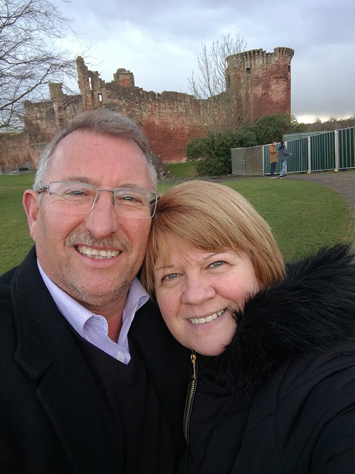

Thank you for taking the time to visit our website.
We've been together since the early 80's and about 30 years ago we started our first and biggest collection, the thimbles!
In the middle of the 90's, Silvia's dream of having a classic doll's house became a reality when we started a kit to build one.
We've built 4 of our houses by buying ready-made kits that we got delivered at home monthly; each month few pieces arrived.
Once we had everything, we started the fun part of putting it together. Over the years we've visited fairs to improve our houses.
Our fifth doll's house was born out of love for our hobby and the feeling that we could built it from scratch ourselves.
